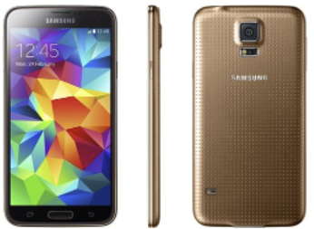

Park Gyeol
/ student
자기소개
취미
활동
SNS
GALAXY S3
GALAXY S4
GALAXY S5
GALAXY S6
GALAXY S7
GALAXY S8
GALAXY S9
GALAXY S10
GALAXY S20
GALAXY S21
GALAXY S5
 사실 삼성의 흑역사라고 불릴 만큼 좋지 못했던 시리즈입니다.
이 시리즈 때문에 각성한 삼성의 디자인팀이 갤럭시 S6를 디자인했고 그 디자인이 업그레이드되면서 현재까지 이어지고 있다고 생각합니다.
디자인뿐만 아니라 사양에서도 아쉬웠는데 노트 3에서 3GB 램을 탑재해 주었었는데 2GB로 다시 다운그레이드 되었었습니다.
하지만 단점만 있었던 것은 아니었습니다. 지문인식 센서가 삼성 플레그십 최초로 탑재 되었었습니다.
현재 방식과 다른 스와이프 형식이라 불편하다는 평도 많았지만 삼성 최초로 탑재를 해줬다는 부분이 의미가 있었던 것 같습니다. 또한, IP67 방수 방진을 지원했었습니다.
방수 방진을 지원하는 것은 갤럭시 S4 액티브와 같이 따로 러기드 폰으로 출시되던 것들은 있었지만 기본 모델에 방수가 탑재된 것은 처음이었습니다.
또한, 일반인들에게는 별로 필요한 기능이 아니지만 기저질환이 있는 사람들에게 유용한 심박수 센서가 기본으로 탑재되어 있었습니다.
마지막으로 초절전 모드라는 기능이 탑재되어 있었는데 이 기능은 급할 때 사용하기 아주 좋은 모드였습니다.
일단 키게 되면 거의 모든 기능들을 사용할 수 없지만 배터리가 방전되기까지의 시간을 워낙 많이 늘려주기 때문에 급할 때 사용하면 좋은 기능이었습니다.
갤럭시 S5를 홍보하기 위해서는 사실 디자인적으로 워낙 마이너스를 많이 받고 가기 때문에 앞서 말했던 4가지의 좋은 기능들을 내세워서 홍보를 하면 좋을 것이라는 생각을 했습니다.